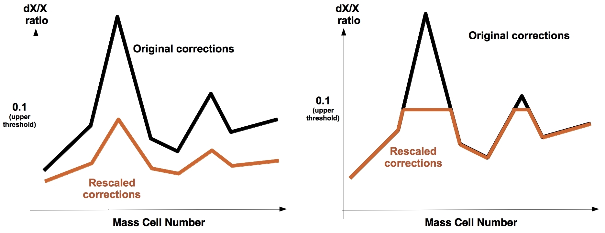
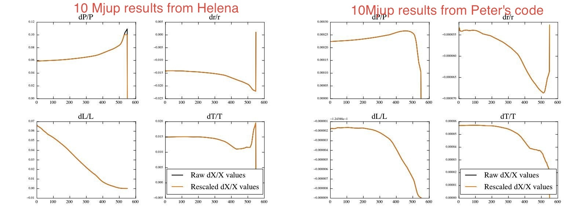

Date & Time: Aug. 6, 2012
Location: home
Computing context: MachoMac
(/Desktop/Research/CppHenyeyCode/src, /Desktop/Research/BodenheimerCode/UnalteredCode)
From last time:
Let's see what happens when I let Helena run for a few consecutive convergence runs now:
Still doesn't converge, but doesn't crash.
max(dX/X) values swing around wildly. I'd like to plot those as a function of convergence loop number. See if any pattern emerges there
These swings indicate that the Henyey convergence process itself is unstable
Check if Peter's code is rescaling the variable corrections in the same way Helena is.
It looks like my correction rescaling approach differs from his in an important way, as illustrated below.

Methods of rescaling corrections. Helena's method is on
the left. Peter's code's method is on the right. Helena multiplies
all the corrections by the same rescaling factor, such that the
maximum dX/X value is reduced below the threshold. In other words,
all the corrections are scaled homologously, and the same rescaling
factor is applied to all four variables' corrections. Peter's code,
on the other hand, doesn't rescale the corrections homologously.
Rather, his code applies a 'ceiling' to the corrections. Different
variables can have different dX/X ceilings in his code.
Figure
1:
To do today:
Make sure that Peter's code is rescaling the corrections as illustrated in Figure 1 (above):
Modify cdeg_debug.f to print out the raw (un-rescaled) corrections and variable values at each mass cell.
Results stored in: BodenheimerCode/UnalteredCode/outputs/10Mjup_unrescaled_corrections.txt
Plot the dX/X value for each variable vs. mass cell #, using Python
Using /BodenheimerCode/parse_plot_utils/plot_dX_over_X.py script to make these plots.
Uncomment the parts of cdeg_debug.f that rescale the corrections
Run cdeg_debug with inputs/cdeg_debug.start, and capture all of the correction and original values for all 4 dependent variables
In python, plot all dX/X values
On the same plot(s), overlay the SMAX value for each variable as a line. (The SMAX values are specified in the .start file, and are what set the 'upper threshold' for dX/X and correction values in Peter's code.)
If I see 'ceiling'-like behavior in the plots of Peter's code's corrections, then I'll know I've understood his rescaling process correctly.
Results of this process: that's exactly what Peter's code is doing. See Figure 2 for proof!
The raw and rescaled dX/X (correction) values from
Peter's code. Input file: cdeg.start (n=3/2 1Msun input model).
Output file:
BodenheimerCode/UnalteredCode/outputs/n32_all_corrections.txt.
Produced by running cdeg_debug.f. Data parsed and plotted using
BodenheimerCode/plot_parse_utils/plot_dX_over_X.py.
From this plot, it's clear that Peter's code applies a
'ceiling' to the size of the corrections applied at each mass cell.
His code does NOT scale the corrections homologously, as Helena has
been.
Figure
2:
Change Helena to rescale corrections in the same way.
See if that change lets Helena converge the 10Mjup model.
Not quite yet. Something is off in the way the corrections seem to be applied... Comparison between Peter's code and Helena:

Comparison of the dX/X values calculated in Helena vs.
Peter's code in the first convergence loop for the same 10Mjup
no-fusion input model.
Figure
3:
The starting dX/X profiles are different between the models, even before rescaling the corrections, so the differences aren't due to the different rescaling thresholds specified in the two codes. Need to compare the dX values between Peter's code and Helena for this 10Mjup model.
Need to write myself a python script to directly compare the X and dX and rescaling values between the two cases.